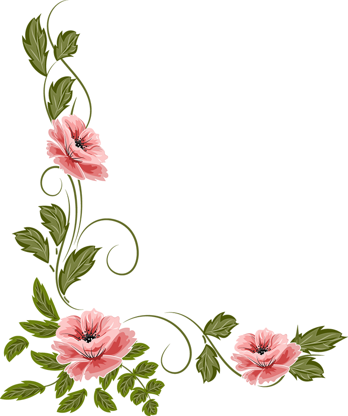
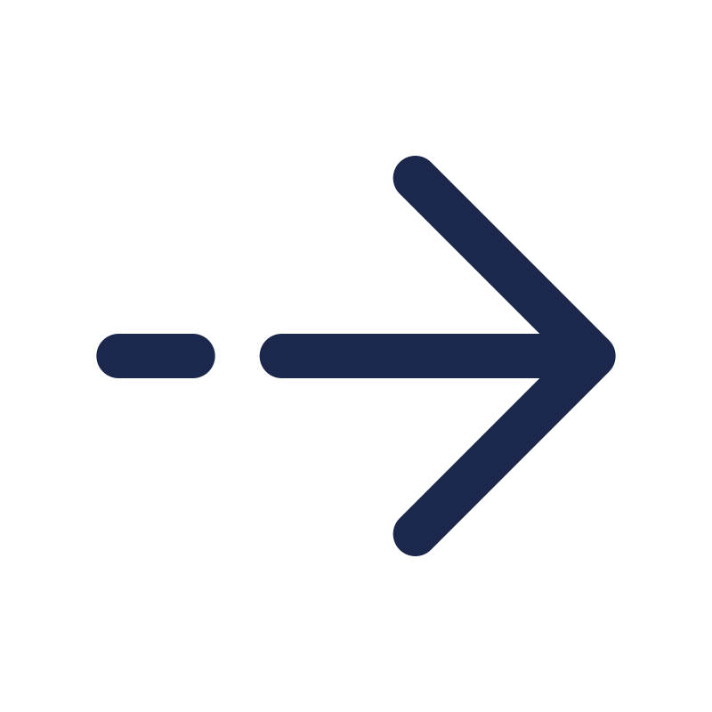

Neben dem Streamen, absolviere ich aktuell das Studium: Physik der Erde und Atmospähre. Als enspannung, schalte ich meistens erst gegen Abend den Stream an.
Ich freue mich auf deine Anwesenheit 😊
Hallo!Schön, dass du hier bist. 😇
2023 durfte ich Twitch neu kennenlernen und streame nun seit dem 20.10.2023 selber diverse Games auf Twitch.
Meine Game Genere umfasst z.B.:
- Simulation
- Survival
- Horror
- Shooter
- etc...
Neben dem Streamen, absolviere ich aktuell das Studium: Physik der Erde und Atmospähre. Als enspannung, schalte ich meistens erst gegen Abend den Stream an.
Ich freue mich auf deine Anwesenheit 😊
- Über Mich
-  Julia
- Linux for the win!
- Valve Index
- Liblingsfarbe, fav. color: 💙
- Linkshänderin, left-hander
- aus Bayern, wohnhaft in NRW, GER
-
Studium: Physik der Erde und Atmosphäre
study: physics of the earth and atmospere
2023/24
2024/25
2025/26